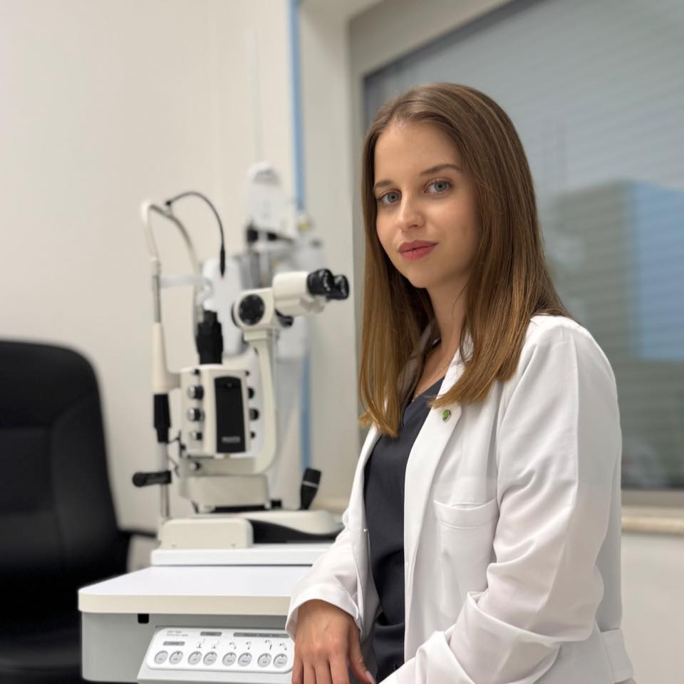

За мен
Аз съм Д-р Йоана Вангелова, специализант по офталмология във Варна. Извършвам прегледи, консултации, диагностика и лечение на очни заболявания от различно естество.
Професионалните ми интереси са в областта на офталмологията и естетичната медицина, с фокус върху ретиналните заболявания, лазерни процедури и микрохирургия. В практиката си прилагам цялостен подход, който включва не само контрол на зрителните увреждания, но и анализ на системни фактори като диабет и хипертония.
Прилагам иновативни естетични техники, базирани на фракционен CO₂ лазер за стимулиране на колагеновата продукция, третиране на белези, премахване на ксантелазми и подобряване на текстурата на кожата, в комбинация с хиалуронови филъри.
Преглеждам и деца над 5-годишна възраст.
Образование
- Медицински университет – Варна
- Специализант по очни болести
- Докторант към МУ Варна с дисертация: “Съвременни хирургически подходи и комплексни решения при социално значими заболявания на ретината”
Квалификации
- Участие в национални и международни конгреси: iCAMPs, FLORETINA, ESCRS, БДО и др.
- Курсове и обучения:
- MD Codes Leaders София
- Инжектиране на ботулинов токсин и хиалуронови филъри
- Работа с CO₂ лазер
- Wet Lab Practice – Alcon
- Phaco Development Residency – Alcon
- Интравитреално приложение на медикаменти
Услуги
- Прегледи и консултации по офталмология
- Диагностика и лечение на очни заболявания
- Лазерни процедури и микрохирургия
- Естетични процедури: CO₂ лазер, хиалуронови филъри, ботулинов токсин
- Детски прегледи (над 5 г.)
Биография
Член на Български лекарски съюз, Българско дружество по офталмология и Европейско дружество по катарактална и рефрактивна хирургия (ESCRS).
Към момента съм част от екипа специалисти на Център за зрение д-р Групчеви – Варна.
Контакти
Телефон: +359 876 004 859
Email: ydvangelova@gmail.com
Адрес: Варна Център, ул. „Селиолу“ 1, 9002 Варна
Запишете час